EcoFlow DELTA 2
1,024 Wh · LiFePO4 · 1800W out
The battery-first pick from our power showdown. Silent, fume-free, recharges off the truck or a panel — covers most nights outright.
Field verdict: buy the battery first.
Check priceOutdoors · Camping · Survival · Tactical
Spec-judged. Load-rated. Built for the dark.
Thirty-nine products on these shelves, every one placed on the numbers — denier and weave, watt-hours and output, pore size and rated life. No paid placements. And down at the end, the fun shelf — because camp is supposed to be fun too.
Department 01
Silent watts and loud insurance.
1,024 Wh · LiFePO4 · 1800W out
The battery-first pick from our power showdown. Silent, fume-free, recharges off the truck or a panel — covers most nights outright.
Field verdict: buy the battery first.
Check price
1,056 Wh · LiFePO4 · 2000W out
The DELTA 2's sparring partner — a touch more capacity and serious output headroom for tools, fridges, and coffee makers at camp.
Field verdict: the output heavyweight.
Check price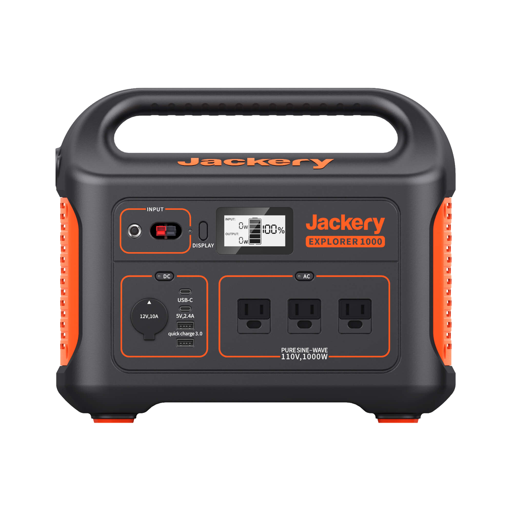
1,002 Wh · 1000W out
The lighter carry. A proven kilo-watt-hour class unit for truck camping and emergency backup where every pound rides with you.
Field verdict: the weight-saver's pick.
Check price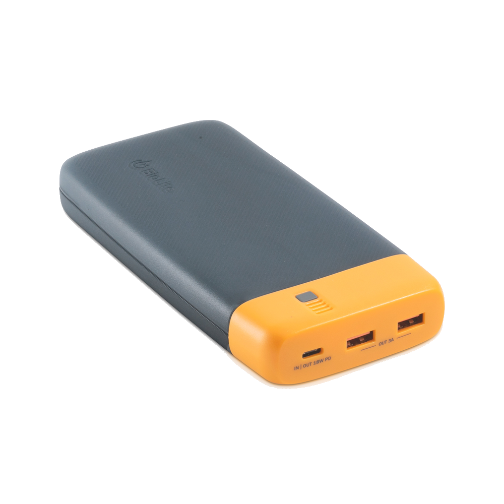
20,000 mAh · USB-C PD fast charge
Pocket power. The bridge between your phone and the big station — a week of charges for phones, headlamps, and cameras in one brick.
Field verdict: the everyday-carry battery.
Check price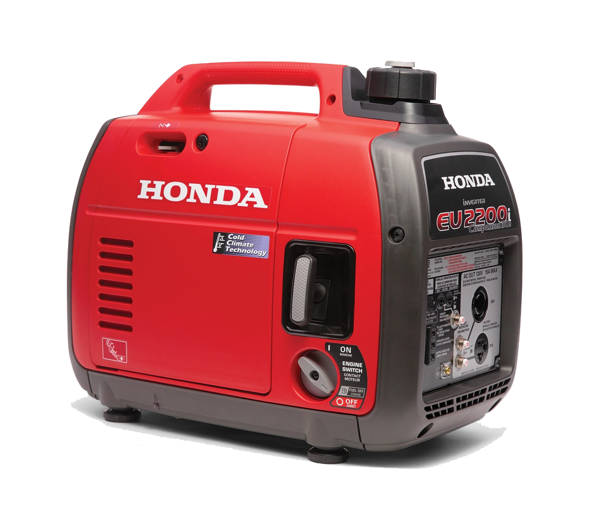
2,200 W · gas inverter · 48–57 dB
The insurance policy. When the outage outlasts the battery, a quiet gas inverter runs as long as fuel lasts. Second purchase, not first.
Field verdict: the long-haul backup.
Check price
1,451 Wh · 2,400W out · 1.5-hour recharge
The biggest battery on this shelf — 2,400W of pure sine output, a 1.5-hour recharge, and a 5-year warranty behind it. When the DELTA 2 class runs out of headroom, this is the next step up.
Field verdict: the heavyweight station.
Check priceDepartment 02
Two layers. Zero gambles.
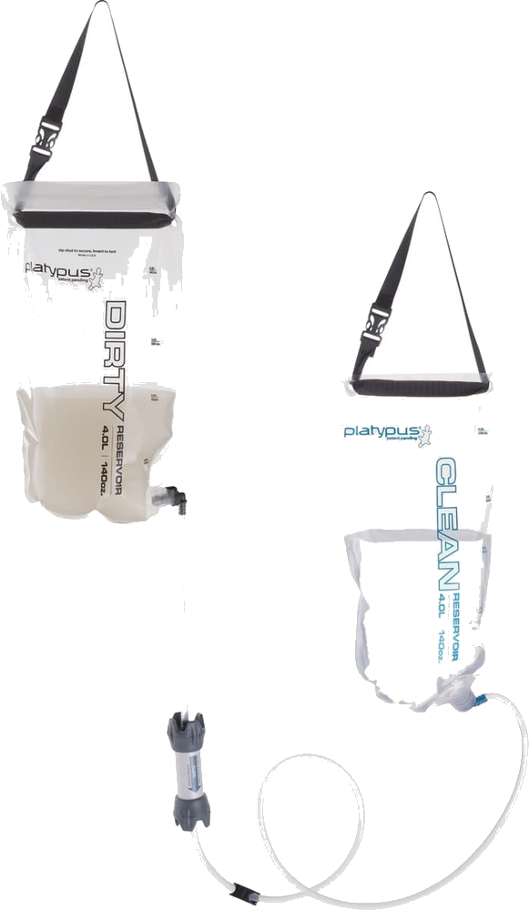
4.0 L · gravity-fed · 0.2 micron
Layer one: volume. Hang it, walk away, filter camp water for the whole group without pumping a single stroke.
Field verdict: the base-camp workhorse.
Check price
0.1 micron · rated 100,000 gal
Layer two: the backup that lives in your pack. 0.1-micron absolute filtration, rated for up to 100,000 gallons, weighs almost nothing.
Field verdict: the pack-carried insurance.
Check price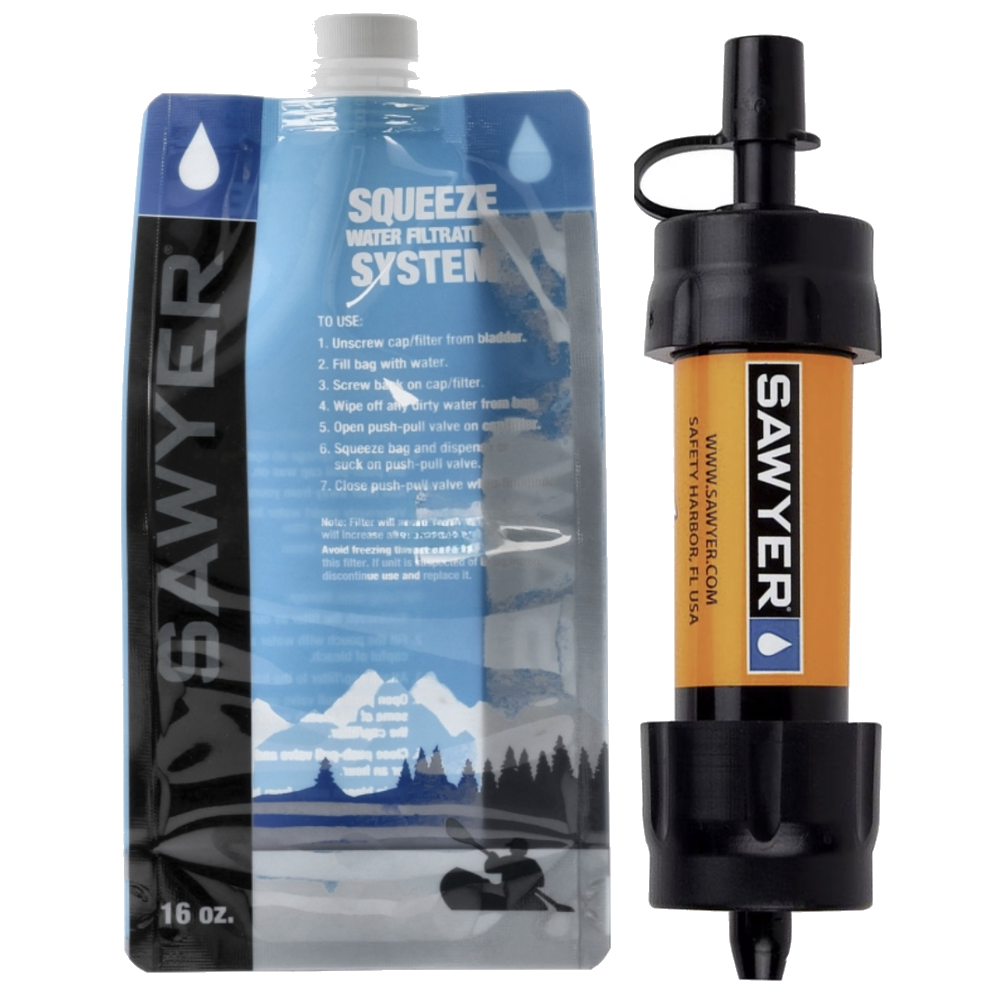
0.1 micron · 2 oz · ultralight
The spare's spare. Two ounces, drinks straight from the source or screws onto a bottle — the filter you stash in every kit you own.
Field verdict: one in every bag.
Check price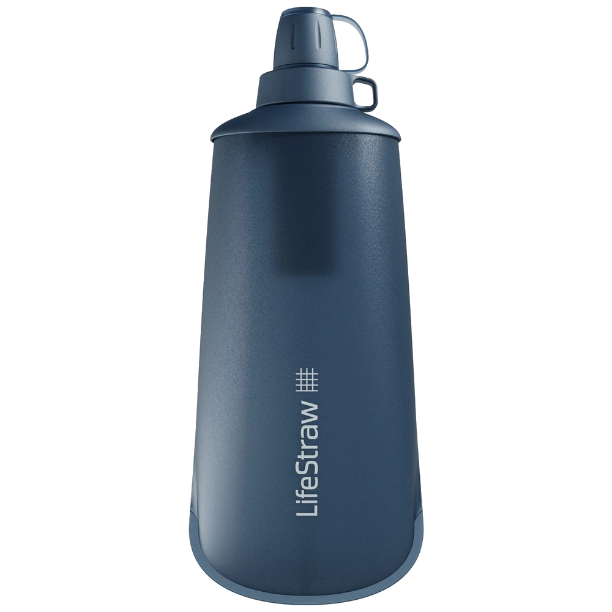
0.2 micron · squeeze or sip
The name that started the category, rebuilt tougher. Squeeze it into a bottle or drink straight from the creek crossing.
Field verdict: the day-hike default.
Check price
Purifier · viruses + bacteria · 24 oz
A filter removes bacteria; a purifier also takes viruses and chemicals. Fill, press, drink — the one bottle for water you'd never touch otherwise.
Field verdict: the anywhere-on-Earth bottle.
Check priceDepartment 03
Fabric is destiny.
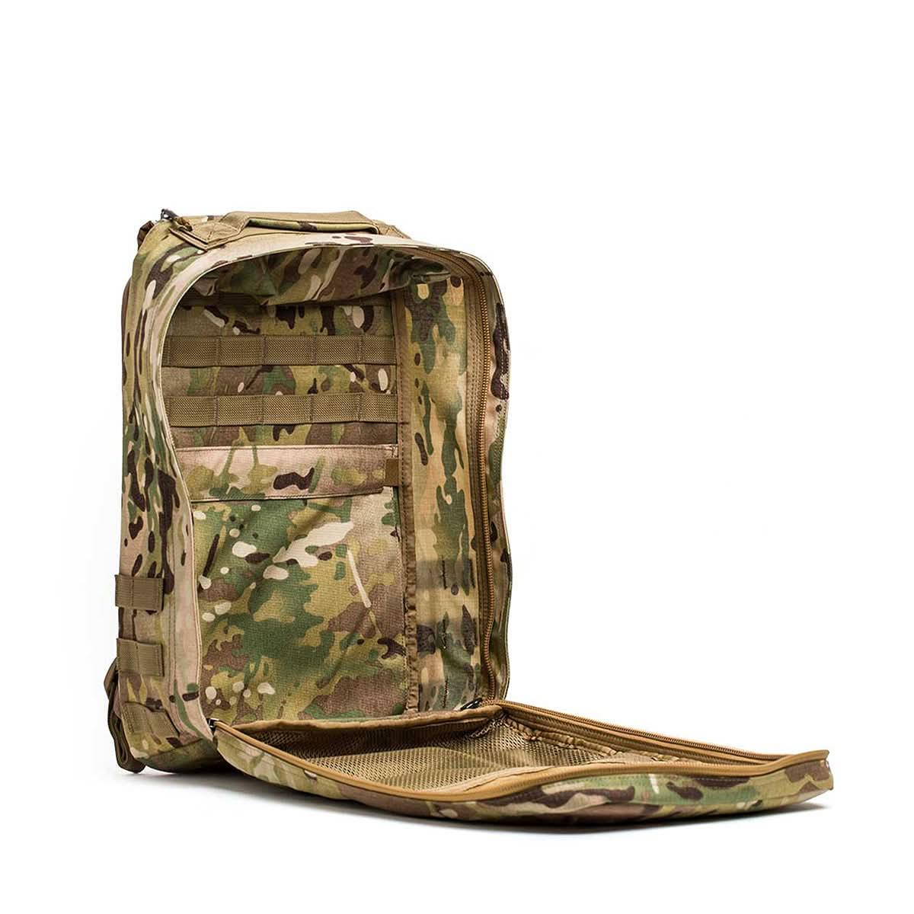
1000D · CORDURA® nylon
Built from the abrasion king. Drag it, haul it by one strap, throw it in the truck bed — 1000D CORDURA is the fabric that shrugs it off.
Field verdict: dragged-and-hauled duty.
Check price
500D · CORDURA® nylon
The all-day carry. 500D keeps most of the toughness at a weight your back won't bill you for by mile ten.
Field verdict: carried on your own back.
Check price
1050D · ballistic-class nylon
Ballistic-class weave's strength is tear resistance — it stops a rip from running. The tactical loadout pick for vehicle and duty use.
Field verdict: the tear-stopper.
Check price
65 L · Anti-Gravity suspension
The big-mile hiker. A trampoline back panel that carries a week's gear like it's on springs — the thru-hike crowd's default answer.
Field verdict: the long-trail hauler.
Check price
44 L · built-in rifle scabbard
The military shelf's anchor — a pack designed around carrying a long gun discreetly, born from sniper-team requirements.
Field verdict: the professional's pack.
Check priceDepartment 04
Comfort is a load decision too.

1.1 lb · packs to a water bottle
A real chair that weighs less than the water you'll drink sitting in it. The luxury item that earns its ounces every single evening.
Field verdict: the morale upgrade.
Check price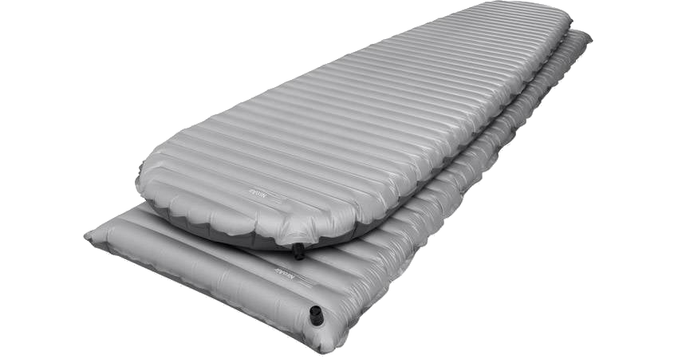
R-value 7.3 · winter rated
The warmth-per-ounce king. Four-season insulation in a pad that packs down to a loaf of bread — sleep on snow and mean it.
Field verdict: the cold-ground answer.
Check price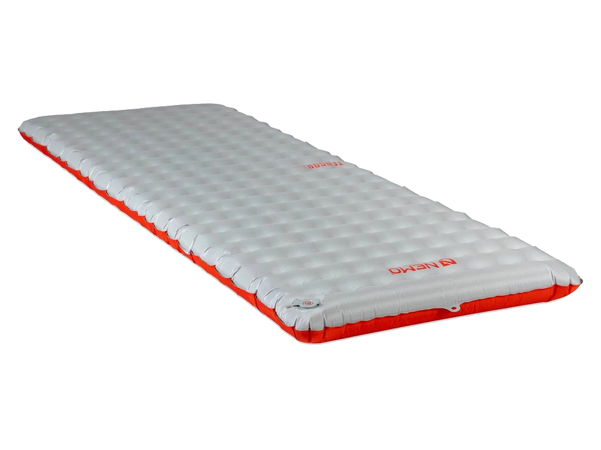
R-value 5.4 · whisper-quiet fabric
Three-season warmth without the potato-chip crinkle that wakes the whole tent every time you roll over.
Field verdict: the quiet sleeper.
Check price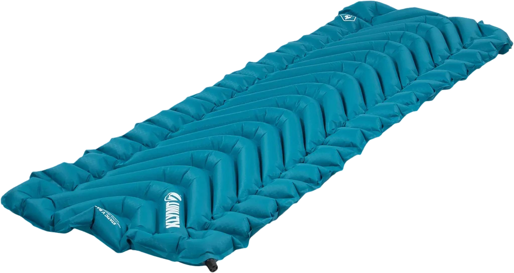
V-chamber design · budget legend
The pad that proved comfort doesn't need a premium price. Body-mapped air chambers, stuffs small, priced like a pizza night.
Field verdict: the starter-pad standard.
Check price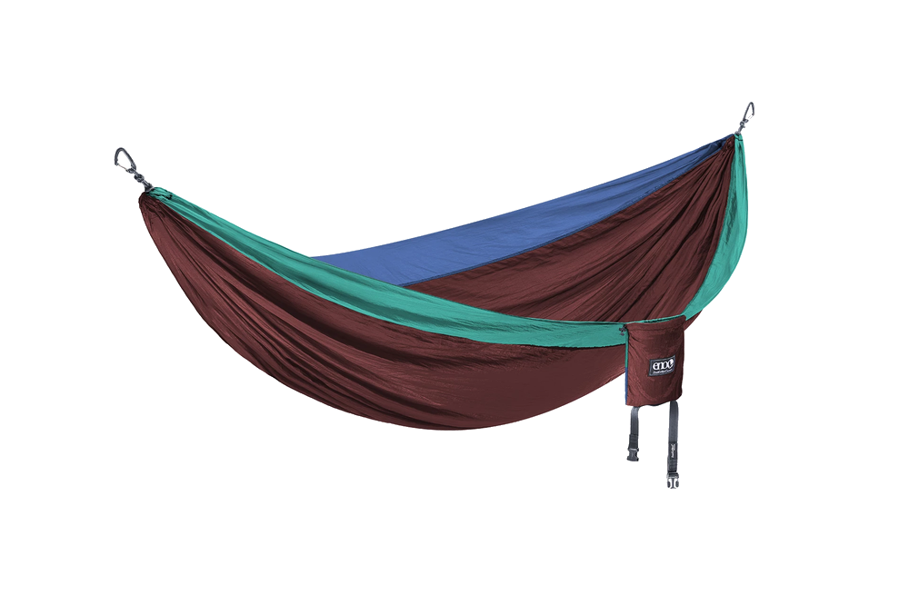
400 lb capacity · 19 oz
Two-person hammock that packs to grapefruit size. Camp chair, nap pod, and sunset seat in one stuff sack.
Field verdict: the afternoon headquarters.
Check priceDepartment 05
The kit that answers the worst day.

18 tools · 8.5 oz · 25-yr warranty
The multitool benchmark everything else gets compared to. Pliers, blades, drivers, a saw — a toolbox that rides on your belt.
Field verdict: the one-tool answer.
Check price
1.9 oz · CPM-S30V steel
The knife that disappears in your pocket and shows up for everything — featherweight champion of everyday carry.
Field verdict: the pocket ghost.
Check price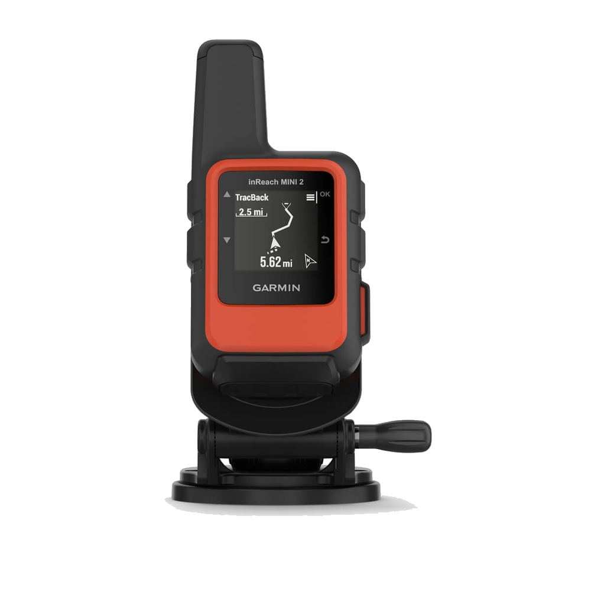
Satellite SOS · 3.5 oz · global coverage
The button that calls the helicopter from anywhere on Earth. Two-way satellite messaging where cell towers are a rumor.
Field verdict: the ultimate insurance.
Check price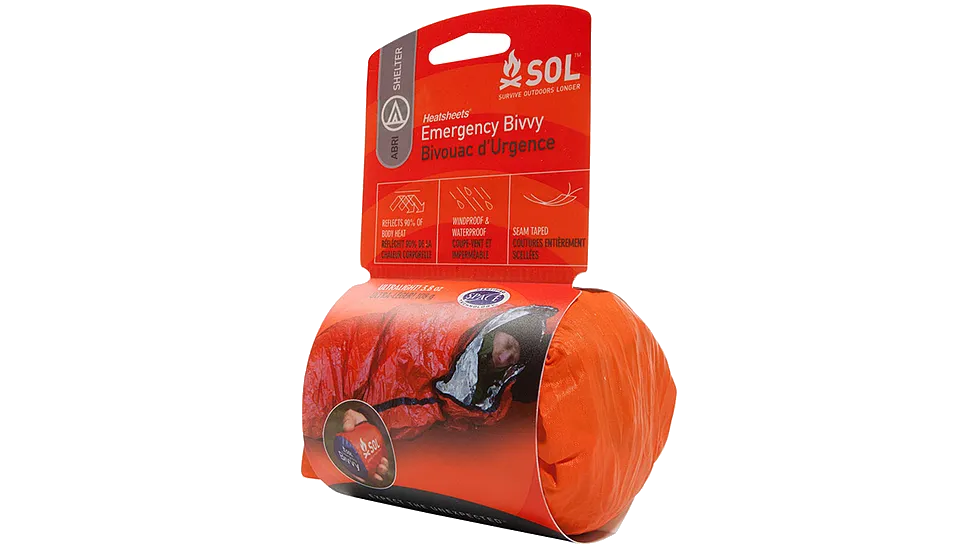
3.8 oz · reflects 90% body heat
Three-point-eight ounces of don't-die. A full emergency shelter that vanishes into a pack pocket until the day it saves the trip — or more.
Field verdict: never leave without it.
Check price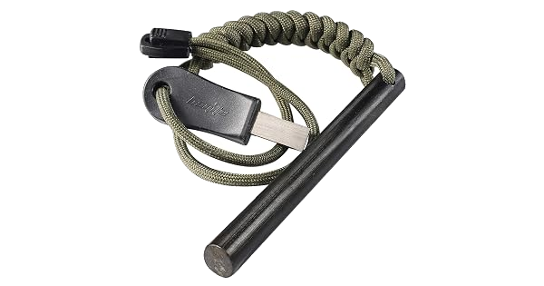
1/2 in ferrocerium · thousands of strikes
A half-inch of 5,500-degree sparks that works wet, cold, and out of fuel — when lighters have all quit, this hasn't.
Field verdict: fire that can't run out.
Check priceDepartment 06
Not load-rated. Morale-rated.
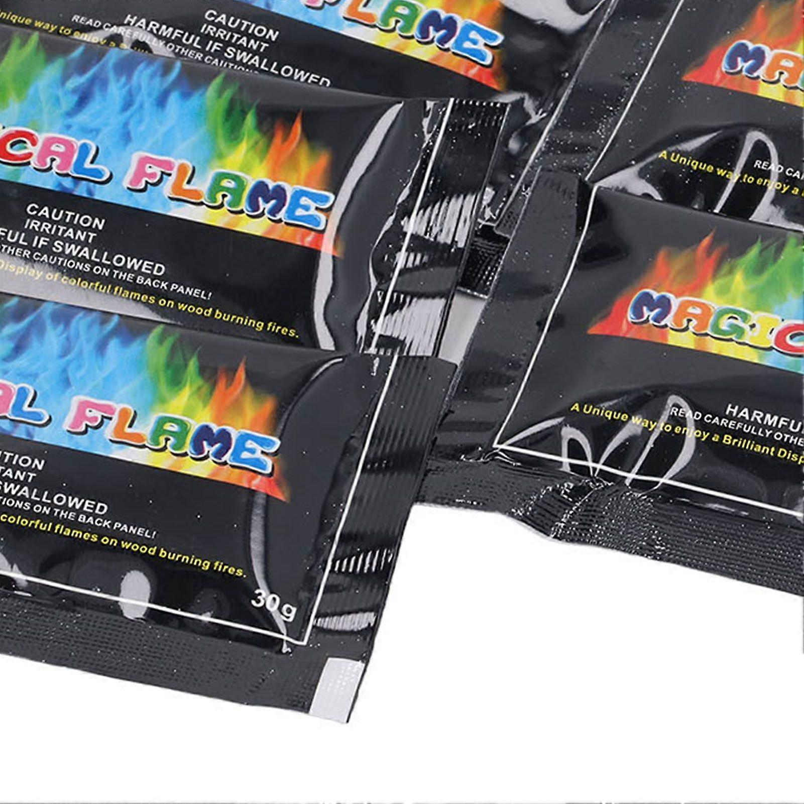
Campfire color packets · 12-pack
Toss a packet in and the fire goes blue, green, and purple for the better part of an hour. Zero survival value. Infinite campfire value.
Field verdict: the crowd-pleaser.
Check price
18 ft · solar · 100 lumens
Solar string lights that turn a campsite into a basecamp with a vibe. Charges all day, glows all night, packs into its own case.
Field verdict: instant atmosphere.
Check price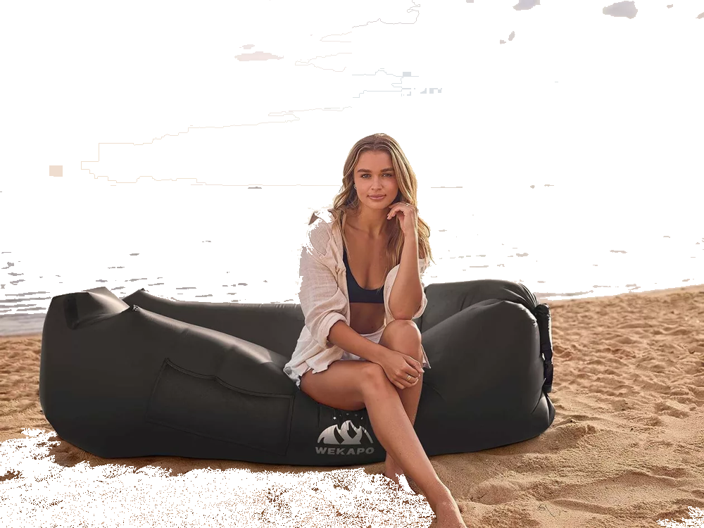
No pump · wind-fill · packs flat
Scoop air, seal it, recline anywhere — beach, festival, or basecamp. The most ridiculous-looking nap you'll ever defend.
Field verdict: the guilty pleasure.
Check price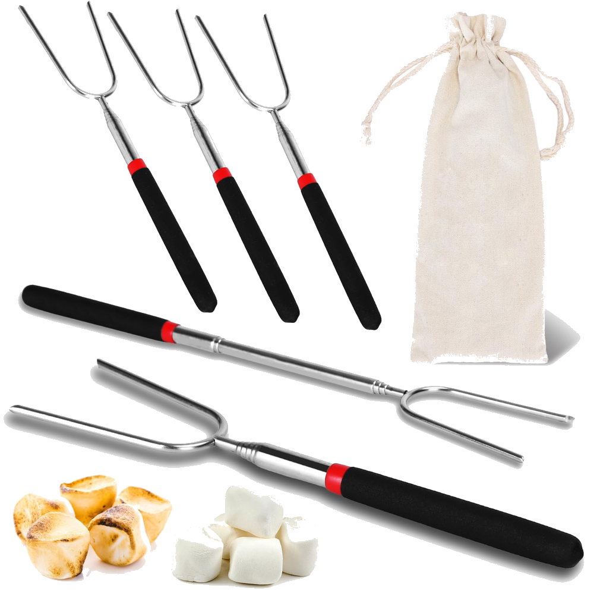
Extends to 32 in · rotating forks
Retractable roasting forks that keep little hands three feet from the fire and collapse into a drawer. S'mores, engineered.
Field verdict: the family upgrade.
Check price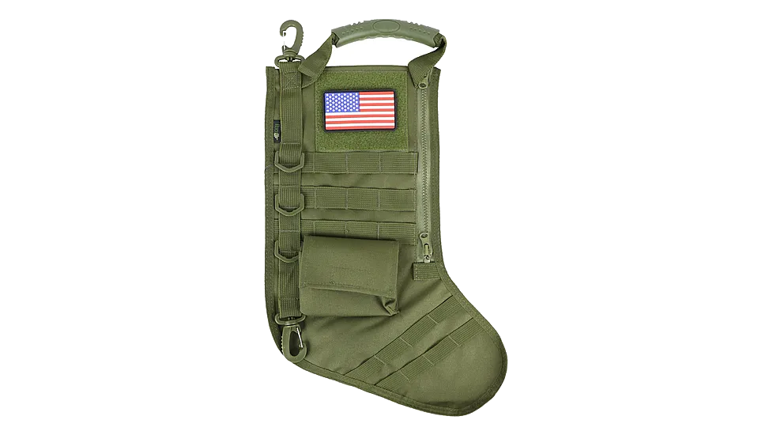
MOLLE webbing · patch panel · handle
A Christmas stocking with MOLLE webbing, a hook-and-loop patch panel, and a carry handle — because Santa also believes in load-bearing holidays.
Field verdict: the stocking that deploys.
Check price
Metal · weatherproof · 12 in
Official warning for your camp, cabin, or garage. Sightings not included. Belief sold separately.
Field verdict: he's out there.
Check priceDepartment 07
Reels that earn their keep.

Low-profile baitcaster · 8.1:1 · aluminum frame
Piscifun's best-selling casting reel — a low-profile aluminum frame, an 8.1:1 retrieve for burning baits back, and 389 reviews behind it. A working reel at a working price.
Field verdict: the best-selling workhorse.
Check priceDepartment 08
The deer-season shelf.

32MP · 4K video · 0.2s trigger · 100 ft range
The pre-season eye. 32MP stills and 4K video with a 0.2-second trigger, so you pattern the stand before the season instead of guessing.
Field verdict: pattern first, hunt second.
Check price
1,400 yd max · 750 yd on deer · 5x · 4.8 oz
Know the yardage before the shot. 750 yards on deer with angle compensation, in a 4.8-ounce package that rides in a pocket.
Field verdict: range it before you raise it.
Check price
All-rubber · Roar to tending grunt, no reed adjustment · built-in wheeze
Primos' loudest grunt call, all rubber, shifting from a full roar to a tending grunt without touching a reed — plus a built-in challenge wheeze.
Field verdict: the November conversation.
Check price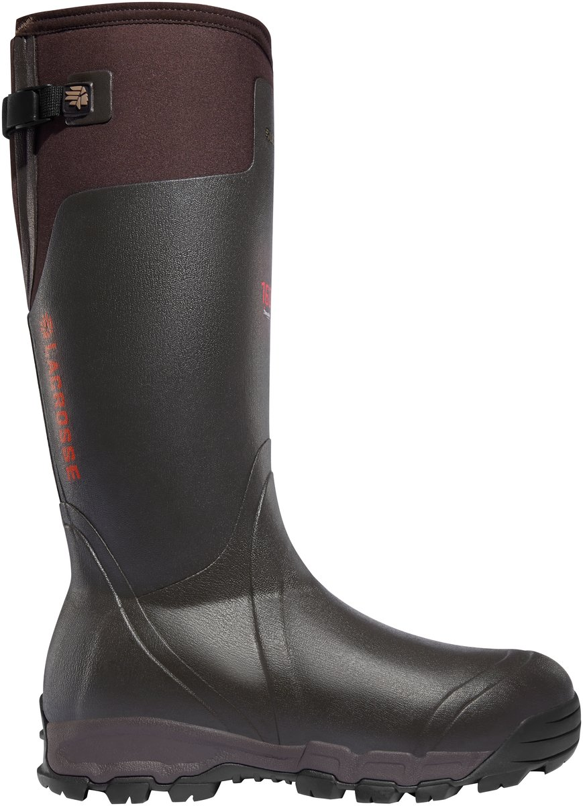
1,600g Thinsulate Ultra · 18 in · fully waterproof
The November boot. 1,600 grams of Thinsulate under hand-laid rubber over neoprene, fully waterproof, built for mud and snow.
Field verdict: warm, dry, still.
Check price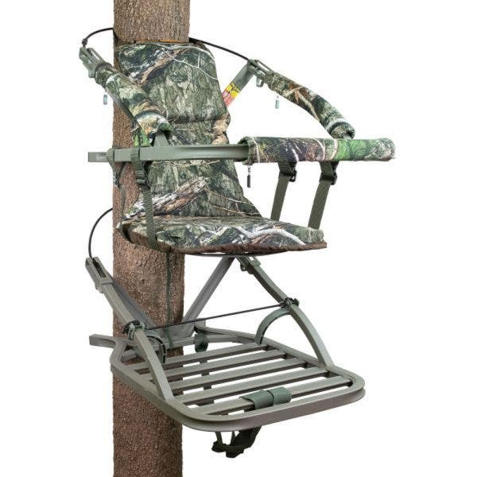
20 lbs · 300 lb limit · aluminum · harness included
The classic climber. 20 pounds of aluminum with a suspended foam seat, sound-deadening, and a full-body harness in the box.
Field verdict: the perch that earned its name.
Check price
Two fixed blades · 3.75 in gut hook · sheath sharpener · 5.9 oz
The after-the-shot kit. A 3.75-inch gut hook and a compact second blade in a piggyback sheath with a carbide sharpener built in — 5.9 ounces total.
Field verdict: field to freezer, no extra tools.
Check priceThe verdicts
Spec tables, sources, and a clear call at the end of each.
Guide 01 · Carry
Verdict: gear that gets dragged and hauled by one strap — 1000D CORDURA or ballistic nylon. Carried all day on your own back — 500D CORDURA, and you'll feel every ounce you saved.
Read the guideGuide 02 · Power
Verdict: buy the battery first and the gas inverter second. Silent power covers most nights; gas is the insurance policy for the rest.
Read the guideGuide 03 · Water
Verdict: run two layers — gravity for volume, a squeeze filter for backup and movement. One system is a plan with a single point of failure.
Read the guideGuide 04 · Hunt
Verdict: two states, two weeks apart — re-zero with your hunting ammo, re-pack for November, and hunt the season you are actually in.
Read the guideBLACKPINE FIELD publishes research and specification comparisons. We compare published specs — denier, weave, watt-hours, decibels, microns, rated filter life — and label every figure for what it is, including when it's a manufacturer's claim. Unless a piece says otherwise in the text, we have not hands-on tested the products covered, and we never invent test results, runtimes, or field anecdotes. The day a piece of gear is actually in hand and used, the piece will say so — with dates, conditions, and load stated.